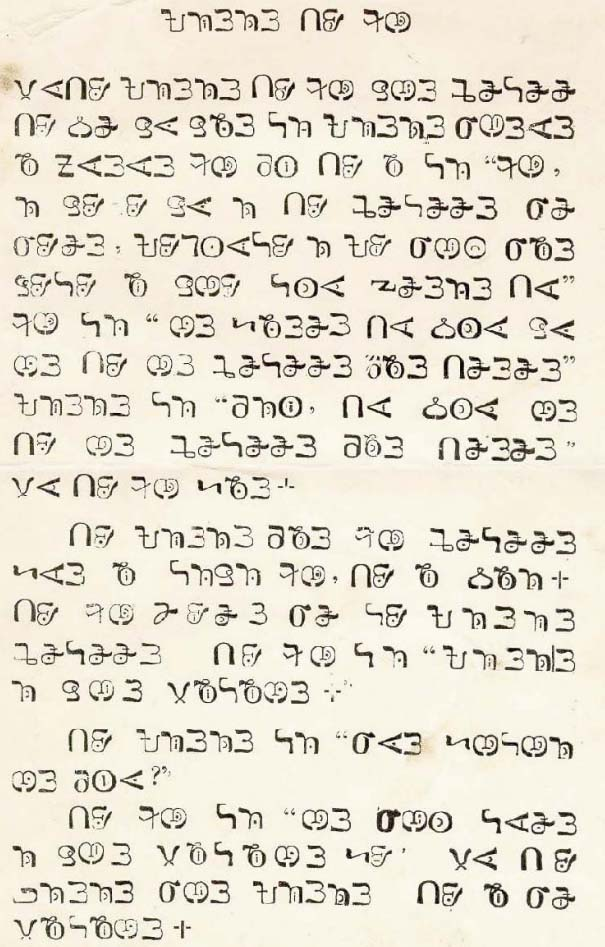

This page gathers basic information about the Bassa Vah script and its use for the Bassa language. It aims (generally) to provide an overview of the orthography and typographic features, and (specifically) to advise how to write Bassa using Unicode.
Phonetic transcriptions on this page should be treated as an approximate guide, only. Many are more phonemic than phonetic, and there may be variations depending on the source of the transcription.
The Bassa Vah script is used to write the Bassa language spoken in Liberia and Sierra Leone, and by Bassa speakers in Brazil and the Caribbean. It is not widely used at present, although there are some ongoing efforts to revive its use.
𖫢𖫧𖫳𖫒𖫨𖫰𖫨𖫱ba⁴sɔ¹ɔ² (Ɓǎsɔ́ɔ̀) Bassa
According to ScriptSource, "the script developed from the earlier Bassa communication system of signs made from chewed leaves or carved into trees and left in set locations where they would be found and interpreted. As this system developed, it was employed by the Bassa people to avoid slave traders, so was suppressed by colonial powers and became almost extinct".
Wikipedia takes up the story: "Dr. Thomas Flo Lewis, who rediscovered the script in South America from descendants of Bassa Slaves taken to the Americas ... instigated publishing of limited materials in the language from the mid-1900s through the 1930s, with its height in the 1910s and 1920s. It is alleged that some of the signs are based on native Bassa pictograms revealed by a former slave. It is not clear what connection it may have had with neighboring scripts, but type was cast for it, and an association for its promotion was formed in Liberia in 1959."
The Bassa Vah script is an alphabet. Both consonants and vowels are indicated by letters. See the table to the right for a brief overview of features for the modern Bassa Vah orthography.
Bassa Vah text runs left to right in horizontal lines.
The script is monocameral. Words are separated by spaces.
23 consonant letters are used for Bassa Vah.
There are no special arrangements for consonant clusters.
Syllables are mostly open, but may be followed by nasalisation.
Bassa Vah vowels are straightforward. There are 7 vowel sounds and 7 vowel letters. Vowel letters can be used in standalone positions without any support.
Every syllable must have a tone mark, including standalone vowel sounds, and the mark is positioned in the centre of the vowel glyph.
For a much more detailed description of Bassa phonology, see Bertkau.b
Character index
The index points to locations where a character is mentioned in this page, and indicates whether it is used by the modern Bassa orthography described here.
Show the index
Letters
Consonants
𖫥␣𖫢␣𖫡␣𖫗␣𖫞␣𖫟␣𖫙␣𖫑␣𖫖␣𖫘␣𖫝␣𖫓␣𖫣␣𖫒␣𖫜␣𖫚␣𖫠␣𖫤␣𖫔␣𖫐␣𖫕␣𖫛𖫦
Vowels
𖫭␣𖫪␣𖫫␣𖫩␣𖫬␣𖫨␣𖫧
Combining marks
Tones
𖫰␣𖫱␣𖫲␣𖫳␣𖫴
Punctuation
𖫵␣“␣”
Character lists show:
Phonology
These are sounds for the Bassa language.
Click on the sounds to reveal locations in this document where they are mentioned.
Phones in a lighter colour are non-native or allophones. Source Bertkau.
Vowel sounds
Consonant sounds
labial
dental
alveolar
post-
alveolar
palatal
velar
glottal
stop
pb ɓ
td ɗdʲ
cɟ
kɡ k͡pɡ͡b
affricate
fricative
fv
sz
xʷɣʷ
hhʷ
nasal
m
n
ɲ
approximant
w
l
trill/flap
r
Structure
Bassa morphemes typically don't have final consonants, but do often end in a nasalised vowel.
The morphemes may begin with a consonant 'cluster', which is formed from an initial consonant followed by a 'transitional vowel', then another consonant. In rapid speech the transitional vowel is very short, and its sound is entirely predictable from the combination of consonants. In slow speech, the sound is the same as that of the 'full vowel' which follows the consonant cluster.b,8
A romanisation system such as that used by Bertkau omits the transitional vowel, eg. vnɛ̃̀, but the Bassa Vah script represents the transitional vowel with the same vowel symbol used for the full vowel, b,46 eg. 𖫣𖫬𖫱𖫐𖫐𖫬𖫱𖫐vɛ²nnɛ²n
The above is a type of intervocalic consonant. The pattern CVCV usually only occurs for this or for one of the following reasons:b,8ff
reduplicated words (typically repetitions of verbal morphemes to produce nouns, or ideophonic expressions), eg. 𖫥𖫧𖫱𖫥𖫧𖫱
borrowed words (very commonly from English), eg. 𖫧𖫰𖫛𖫧𖫱
compounds (words composed from combinations of other words), eg. 𖫟𖫫𖫴 + 𖫞𖫬𖫲 gives 𖫟𖫫𖫰𖫞𖫬𖫱
other words (mostly for music and living things), eg. 𖫜𖫧𖫱𖫑𖫧𖫰
Vowels
Vowel letters
Use of vowels is straightforward. These are the characters.
𖫭␣𖫪␣𖫫␣𖫩␣𖫬␣𖫨␣𖫧
It is quite common to find vowels at the beginning of a word, and sometimes several together, eg. 𖫒𖫭𖫰𖫧𖫱𖫪𖫰𖫐
Transitional vowels
𖫞␣𖫔␣𖫐␣𖫦
In rapid speech the vowel between an initial consonant and a medial consonant that is one of 𖫞 [U+16ADE BASSA VAH LETTER DO], 𖫔 [U+16AD4 BASSA VAH LETTER MBE], or 𖫐 [U+16AD0 BASSA VAH LETTER ENNI], the initial vowel is collapsed, in a predictable way. The initial vowel becomes a shortened version of the vowel that follows the medial consonant. The shortness is typically not shown in the Vah orthography, but may affect a Latin transcription, eg.
𖫞𖫧𖫰𖫔𖫧𖫰𖫡𖫩𖫳𖫞𖫩𖫳𖫣𖫬𖫱𖫐𖫐𖫬𖫱𖫐
In some cases, determined by personal preference, the initial vowel may be replaced with 𖫦 [U+16AE6 BASSA VAH LETTER WADDA],b2 eg.
𖫞𖫦𖫰𖫔𖫧𖫰
Nasalisation
𖫐
𖫐 [U+16AD0 BASSA VAH LETTER ENNI] is used in syllable-final position to indicate nasalisation of the preceding vowel,sr eg. 𖫛𖫨𖫰𖫐-𖫛𖫨𖫰𖫐wɔ¹n-wɔ¹n(wɔ̃́-wɔ̃́)
Bertkau reports that the ENNI glyph is sometimes attached to the vowel,b,46 something like this 𖫑𖫪𖫱𖫐𖫧𖫐 (kũ̀ã̀) work
Tones
𖫰␣𖫱␣𖫲␣𖫳␣𖫴
Bassa Vah has 5 tone marks. Every syllable must have a tone mark, and they are positioned in the centre of the vowel glyph, eg. 𖫩𖫰 𖫩𖫱 𖫩𖫲 𖫩𖫳 𖫩𖫴o¹ o² o³ o⁴ o⁵𖫫𖫰 𖫫𖫱 𖫫𖫲 𖫫𖫳 𖫫𖫴e¹ e² e³ e⁴ e⁵
Tone marks are stored as combining marks immediately after a vowel letter. In a sequence involving standalone vowel sounds, each vowel will have a tone mark, eg. 𖫒𖫨𖫱𖫫𖫱𖫭𖫱𖫐sɔ²e²i²n
Vowel sounds mapped to characters
The following tables show how the above vowel sounds commonly map to characters or sequences of characters in the Bassa language.
Vowel letters are shown here without tone marks, but should always be marked for tone in normal text.
Three letters each represent either a plosive or a nasal. The alternative sound is normally triggered by whether the syllable is nasalised or not, however there are estimated to be around 30 words which have oral vowels but nasal onsets.
Similarly, 𖫝 [U+16ADD BASSA VAH LETTER GBU], which is pronounced either ɡ͡b or ŋ͡m when followed by a nasalised vowel.
There is, however, no way to tell the pronunciation when followed by an oral vowel. For example, the following two words are written the same way:b,46𖫔𖫧𖫴
In all these cases, the Latin script orthography shows the differences, ie. ɓ/m, dy/ny, and gb/gm.
Wadda
𖫦
𖫦 [U+16AE6 BASSA VAH LETTER WADDA] was added to the repertoire by Dr. Lewis, but never used by him. It represents the sound ɾ, which is an allophone of ɗ and appears only after t or d in a syllable initial 'cluster', but is generally written with 𖫞 [U+16ADE BASSA VAH LETTER DO].
This letter may also be used to indicate a transitional vowel (see transitional).
Consonant clusters
There aren't any real consonant clusters in Bassa. However, in rapid speech the vowel between two consonants in a bi-consonantal morpheme is collapsed, and this may be reflected in Latin transcription. For example, 𖫞𖫧𖫰𖫔𖫧𖫰
When 𖫐 [U+16AD0 BASSA VAH LETTER ENNI] appears before another consonant without an intervening vowel, it is nasalising the preceding vowel (see nasalisation).sr Two ENNI in a row indicates a nasalised vowel followed by an intervocalic n, and is always written this way to avoid confusion,b,46 eg. 𖫣𖫬𖫱𖫐𖫐𖫬𖫱𖫐
Consonant sounds to characters
The following maps consonant sounds to graphemes for the Bassa language.
This section brings together information about the following topics:
writing styles;
cursive text;
context-based shaping;
context-based positioning;
baselines, line height, etc.;
font styles;
case & other character transforms.
There appears to be no particular context-based shaping in Bassa Vah, and the writing is not cursive.
There are, however, some fonts that use slightly variant shapes for some letters. Also, the two-dot tone mark, 𖫲 [U+16AF2 BASSA VAH COMBINING MID TONE], is sometimes written with the dots horizontal, and sometimes vertical.
Context-based positioning
Tone marks need to be positioned relative to each vowel glyph to which they are attached.
There don't appear to be multiple combining characters associated with a single base.
Font styles
tbd
Case & other character transforms
According to ScriptSource, a lower case was developed in recent years by the Bassa Vah Association in the Americas. This case distinction is not yet supported by Unicode.s
Punctuation & inline features
Grapheme boundaries
tbd
Word boundaries
Words are separated by spaces.
The sample above shows a number of instances where hyphens are used within a word, eg. 𖫐𖫭𖫱𖫐-𖫗𖫭𖫰𖫞𖫭𖫰ni²n-di¹ɖi¹𖫕𖫪𖫲𖫐-𖫞𖫫𖫱dᶯu³n-ɖe²
Generally, western punctuation is used, including commas, and periods.
Bassa Vah also has a native full stop, 𖫵 [U+16AF5 BASSA VAH FULL STOP], which can be used instead of the period.
Observation:fig_printed_page shows an example of printed Bassa Vah text that uses the ASCII comma and question mark, and western quotation marks. The full stop, however, is a native Vah sign.
It was once thought that a similar symbol was used for a comma, but it was decided that this was actually just a typographic error in one document.rc
Parentheses & brackets
tbd
Quotations
“␣”
start
end
initial
“ [U+201C LEFT DOUBLE QUOTATION MARK]
” [U+201D RIGHT DOUBLE QUOTATION MARK]
Observation: This is based on an excerpt of Bassa text provided by Charles Riley.sr
Emphasis
tbd
Abbreviation, ellipsis & repetition
tbd
Inline notes & annotations
tbd
Other inline ranges
tbd
Other punctuation
tbd
Line & paragraph layout
Line breaking & hyphenation
Observation: Bassa Vah text appears to be wrapped at word boundaries (see fig_printed_page).
Observation: The conclusions in this section are largely based on a single piece of printed text in Bassa Vah. It is difficult to draw firm conclusions about Bassa practice without exposure to more content.
Charles Riley provided some provenance for this sample: "The jpg was sent to me by Varnie N’jola Karmo, who I believe got it from the late Joseph Gbadyu. The origin of it probably goes back to Thomas Lewis, but it’s uncertain whether it was produced in Syracuse (early 1910’s), Dresden (late 1910’s), or Liberia (1950’s-1960’s). Whichever period it comes from, it is basically the earliest known sample to survive in some form.".
An example of printed Bassa Vah text. (Click to see larger.) Source e.
fig_printed_page shows printed Bassa Vah text that fully justifies text.
Content is organised into paragraphs that are indented initially.
Letter spacing
tbd
Counters, lists, etc.
tbd
Styling initials
tbd
Page & book layout
This section is for any features that are specific to Bassa Vah and that relate to the following topics:
general page layout & progression;
grids & tables;
notes, footnotes, etc;
forms & user interaction;
page numbering, running headers, etc.
Character lists
Version 13.0 of the Unicode Standard has the following block dedicated to the Bassa Vah script (numbers in lists are non-ASCII only):
Bassa Vah30 letters, 5 marks, 1 punctuation : total 36
Show characters used for the Bassa orthography described here: